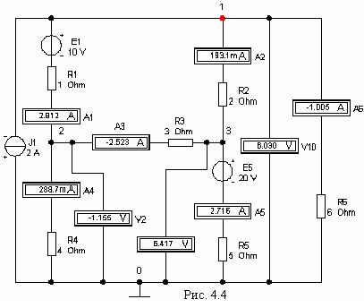

2. –ј—„≈“ —’≈ћџ ÷≈ѕ» ћ≈“ќƒќћ ”«Ћќ¬џ’ Ќјѕ–я∆≈Ќ»…
ƒл€ расчета сложных электрических цепей используют метод узловых напр€жений (ћ”Ќ) или метод контурных токов (ћ “). Ќеобходимое число уравнений дл€ расчета цепи этими методами определ€ют по формулам:
Nћ”Ќ = ” - 1; Nћ “ = B - (” - 1),
где ¬ и ” - число ветвей и узлов в схеме.
¬ыполним расчет схемы цепи (рис. 4.2) (вариант N = 36, см. табл. 4.1) методом узловых напр€жений.
»сходные данные дл€ расчета: J1 = 2 ј; E1 = 10 B; E5 = 20 B; R1 = 1 ќм; R2 = 2 ќм; R3 = 3 ќм; R4 = 4 ќм; R5 = 5 ќм; R6 = 6 ќм.
“аблица 4.1
| ¬ариант | »сточники | —опротивлени€ резисторов, ќм | ||||||
| »Ќ c Ёƒ— ≈k, B | »“ с током Jk, ј | R1 | R2 | R3 | R4 | R5 | R6 | |
| 1 | E5 = 15; E6 = Ц 5 | J3 = 4 | 7 | 2 | 1 | 3 | 9 | 8 |
| 2 | E1 = Ц 20; E6 = 2 | J2 = Ц 5 | 9 | 9 | 7 | 1 | 2 | 3 |
| 3 | E1 = 35; E2 = Ц 5 | J3 = Ц 6 | 1 | 6 | 3 | 9 | 5 | 1 |
| 4 | E2 = 20; E6 = 30 | J2 = 7 | 3 | 4 | 9 | 7 | 8 | 2 |
| 5 | E1 = 40; E3 = 30 | J2 = 8 | 6 | 2 | 6 | 6 | 1 | 3 |
| 6 | E2 = 30; E4 = 15 | J3 = 2 | 9 | 1 | 3 | 4 | 5 | 3 |
| 7 | E3 = 40; E6 = Ц 30 | J3 = Ц 1 | 3 | 3 | 7 | 3 | 8 | 2 |
| 8 | E1 = Ц 15; E4 = 5 | J2 = 6 | 8 | 2 | 8 | 3 | 2 | 2 |
| 9 | E2 = Ц 30; E5 = 5 | J1 = Ц 7 | 3 | 9 | 8 | 3 | 5 | 2 |
| 10 | E3 = Ц 35; E4 = 10 | J1 = 5 | 4 | 2 | 7 | 4 | 2 | 1 |
| 11 | E3 = 25; E6 = Ц 15 | J2 = 3 | 5 | 2 | 1 | 3 | 9 | 8 |
| 12 | E1 = Ц 30; E6 = 10 | J3 = Ц 3 | 9 | 7 | 7 | 1 | 2 | 3 |
| 13 | E1 = 25; E2 = Ц 15 | J2 = 8 | 1 | 6 | 2 | 9 | 5 | 1 |
| 14 | E2 = 10; E6 = 20 | J2 = 5 | 3 | 4 | 9 | 5 | 8 | 2 |
| 15 | E1 = 30; E3 = 20 | J3 = 4 | 6 | 2 | 6 | 6 | 4 | 3 |
| 16 | E2 = 20; E4 = 25 | J2 = 3 | 9 | 1 | 3 | 4 | 5 | 1 |
| 17 | E3 = 30; E6 = Ц 20 | J2 = Ц 5 | 3 | 3 | 7 | 3 | 5 | 2 |
| 18 | E1 = Ц 5; E4 = 15 | J3 = Ц 4 | 8 | 2 | 8 | 6 | 2 | 2 |
| 19 | E2 = Ц 20; E5 = 15 | J2 = Ц 6 | 3 | 9 | 2 | 3 | 5 | 2 |
| 20 | E3 = Ц 25; E4 = 30 | J2 = 4 | 4 | 6 | 7 | 4 | 2 | 1 |
| 21 | E5 = 25; E6 = Ц 15 | J2 = 3 | 5 | 2 | 1 | 3 | 9 | 8 |
| 22 | E1 = Ц 10; E6 = 30 | J2 = Ц 5 | 9 | 4 | 7 | 1 | 2 | 3 |
| 23 | E1 = 25; E2 = Ц 15 | J1 = Ц 2 | 1 | 6 | 7 | 9 | 5 | 1 |
| 24 | E2 = 30; E6 = 10 | J1 = 4 | 3 | 4 | 9 | 5 | 8 | 2 |
| 25 | E1 = 30; E3 = 20 | J2 = 5 | 6 | 2 | 6 | 6 | 4 | 3 |
| 26 | E2 = 40; E4 = 5 | J3 = 6 | 9 | 1 | 3 | 4 | 5 | 2 |
| 27 | E3 = 30; E6 = Ц 20 | J3 = Ц 7 | 7 | 3 | 7 | 3 | 8 | 2 |
| 28 | E1 = Ц 5; E4 = 10 | J2 = 1 | 8 | 4 | 8 | 3 | 2 | 2 |
| 29 | E2 = Ц 20; E5 = 15 | J1 = Ц 4 | 3 | 9 | 3 | 3 | 5 | 2 |
| 30 | E5 = 5; E6 = Ц 15 | J3 = Ц 5 | 7 | 2 | 1 | 4 | 9 | 8 |
| 31 | E1 = 35; E2 = Ц 5 | J3 = Ц 6 | 9 | 4 | 7 | 4 | 2 | 3 |
| 32 | E3 = 30; E6 = Ц 20 | J2 = Ц 5 | 8 | 2 | 8 | 7 | 2 | 3 |
| 33 | E1 = 30; E3 = 20 | J3 = 4 | 3 | 4 | 6 | 4 | 7 | 2 |
| 34 | E1 = 25; E2 = Ц 15 | J1 = 2 | 2 | 6 | 2 | 8 | 5 | 1 |
| 35 | E1 = Ц 10; E6 = 30 | J2 = Ц 5 | 6 | 4 | 9 | 5 | 6 | 2 |
| 36 | E1 = 10; E5 = 20 | J1 = - 2 | 1 | 2 | 3 | 4 | 5 | 6 |
Ќаправление тока J1 изменено на противоположное, т. к. в табл. 4.1 (вариант 36) он задан со знаком "минус" (J1 = - 2 ј).
“опологический анализ схемы показывает, что в ней 7 ветвей, 4 узла, 3 независимых контура и 6 неизвестных токов I1, ... , I6. „исло независимых уравнений Nћ”Ќ = ” Ц 1 = 4 - 1 = 3.
¬ыбираем базисный узел (узел 0), направл€ем к нему узловые напр€жени€ U10, U20 и U30 (см. рис. 4.2) и составл€ем систему уравнений:
G11U10 - G12U20 -
G13U30 = -J1 + G1E1;
-G21U10 + G22U20 -
G23U30 = -G1E1;
-G31U10 - G32U20 +
G33U30 = G5E5,
где G11 = G1 + G2 + G6 = 1/R1 + 1/R2 + 1/R6 = 1/1 + 1/2 + 1/6 = 1,667 —м;
G22 = G1 + G3 + G4 = 1/R1 + 1/R3 + 1/R4 = 1/1 + 1/3 + 1/4 = 1,583 —м;
G33 = G2 + G3 + G5 = 1/R2 + 1/R3 + 1/R5 = 1/2 + 1/3 + 1/5 = 1,033 —м - узловые проводимости; G12 = G21 = G1 = 1 —м; G23 = G32 = G3 = 0,333 —м; G13 = G31 = G2 = 1/2 = 0,5 —м Ц межузловые проводимости; - J1 + G1E1 = = -2 + 1•10 = 8 A; -G1E1= -1Х10 = -10 A; G5E5 = 1/5Х20 = 4 A Ц узловые токи.
ѕодставив численные значени€ в систему уравнений, имеем:
1,677U10 - 1,0U20 - 0,5U30 = 8;
-1,0U10 + 1,583U20 - 0,333U30 = -10;
-0,5U10 - 0,333U20 + 1,033U30 = 4.
¬оспользовавшись калькул€тором Elcalc (рис. 4.3), записываем узловые напр€жени€ в табл. 4.2.

“оки ветвей определим по обобщенному закону ќма (с учетом выбранных условно положительных направлений токов в ветв€х (см. рис. 4.2)):
I1 = (E1 Ц U10)/R1 = (E1 Ц (U10 Ц U20))/R1 = (10 Ц (6,028 + 1,16))/1 = 2,812 ј;
I2 = U31/R2 = (U30 - U10)/R2 = (6,416 Ц 6,028)/2 = 0,194 ј;
I3 = U23/R3 = (U20 - U30)/R3 = (-1,16 Ц 6,416)/3 = -2,525 ј;
I4 = -U20/R4 = 1,16/4 = 0,29 ј;
I5 = (E5 - U30)/R5 = (20 - 6,416)/5 = 2,717 ј;
I6 = -U10/R6 = -6,028/6 = -1,005 ј.
¬ычисленные значени€ токов заносим в табл. 4.2.
“аблица 4.2
| ”зловые напр€жени€ | “оки ветвей схемы | ||||||||
| U10, ¬ | U20, ¬ | U30, ¬ | I1, ј | I2, ј | I3, ј | I4, ј | I5, ј | I6, ј | |
| –ассчитано | 6,028 | -1,16 | 6,416 | 2,812 | 0,194 | -2,525 | 0,29 | 2,717 | -1,005 |
| »змерено | 6,030 | -1,155 | 6,417 | 2,812 | 0,193 | -2,523 | 0,289 | 2,716 | -1,005 |
¬ыполним проверку правильности расчета токов, записав первый закон ирхгофа, например, дл€ узла 1 (см. рис. 4.2):
- J1 + I1 + I2 + I6 = -2 + 2,812 + 0,194 - 1,005 ї 0.
ћоделируем схему цепи варианта 36 на рабочем поле программы EWB (рис. 4.4). «апускаем программу на исполнение и заносим показани€ приборов в табл. 4.2. ”беждаемс€, что расчетные и экспериментальные данные практически совпадают.
